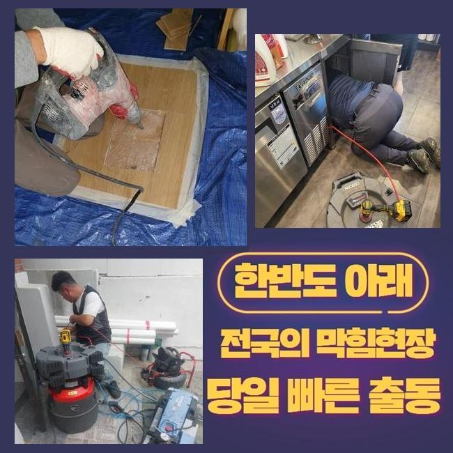
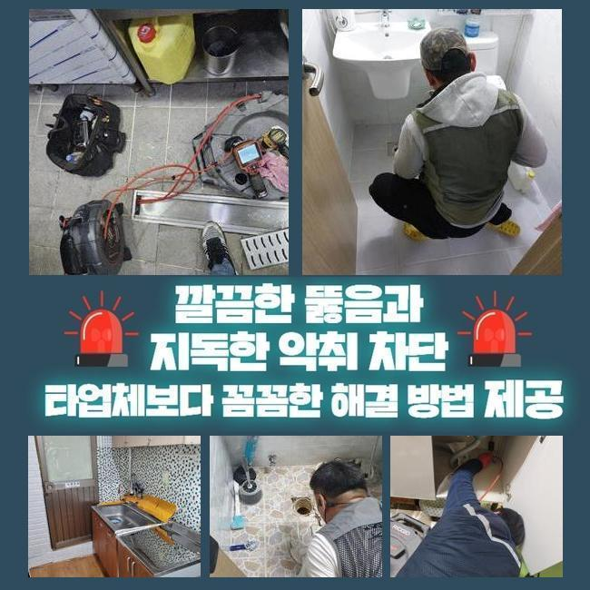
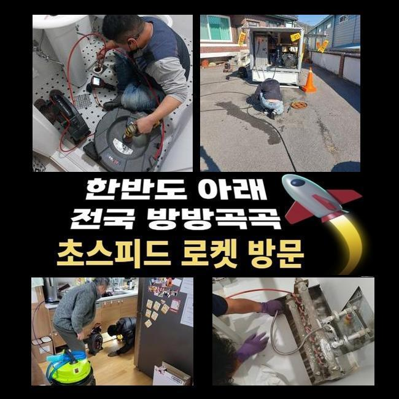
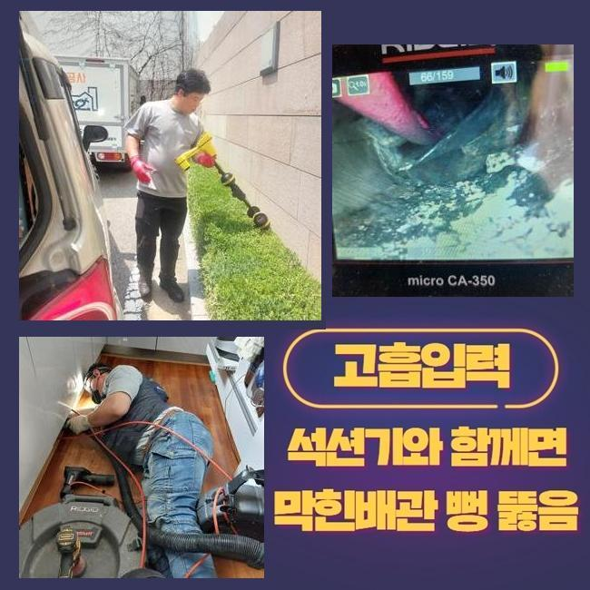
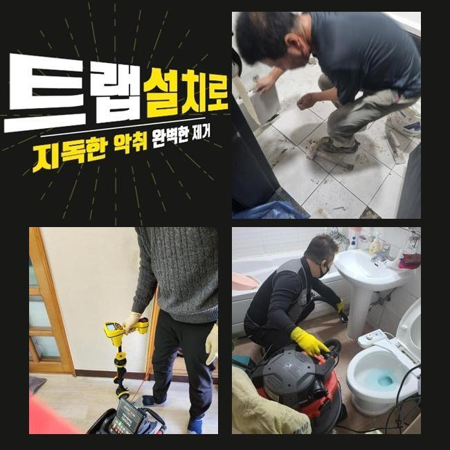
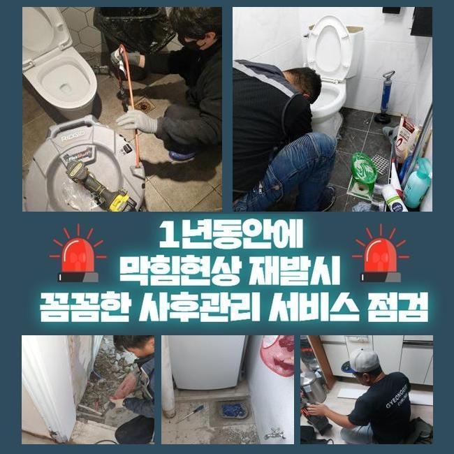
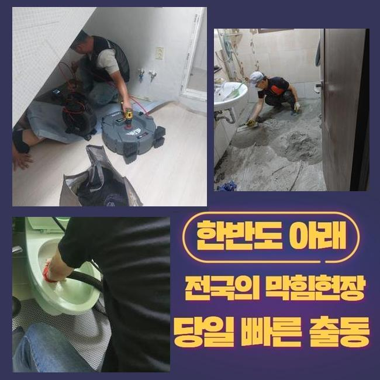

🏠 용인 상갈동오수관뚫음 상하동 배수구뚫기 배관막힘누수
용인 상하동 하수구막힘 전문 시공 후기

📋 작업 개요
- 위치: 용인 상하동, 상하동, 용인
- 서비스 유형: 하수구막힘, 배관막힘, 누수수리, 역류해결, 뚫는업체, 배관청소, 고압세척, 악취차단
- 작업 일시: 2024. 12. 6. 1:49
- 업체명: 하수구수사대 (010-5615-2118)
🔍 문제 상황
용인 상갈동오수관뚫음 상하동 배수구뚫기 배관막힘누수
아파트 중앙배관에 생긴 오염으로 인해서 고압수 청소를 실시했던 장소를 선보여 드리겠습니다
모든 분들이 한 번 이상은 부엌 욕실의 배관이 봉쇄된 경험이 있을 겁니다
오늘의 현장 역시도 메인 배관에 장애가 생겨서 다수의 세대에서 물이 막히는 상황에 봉착하게 되었고 수로의 차단이 심해지면서 더러운 물까지 새어나와서 부리나케 전화주셨습니다
전화주신 고객님의 댁에만 장애가 생긴 수준을 넘었기에 긴급 사안으로 분류되는 경우라고 판별되었습니다
더 심각한 손상을 겪을 수는 없었으므로 빠른 스케줄로 움직여야 한다는 판단 하에 즉각 작업현장으로 옮겨가서 하수구 고장의 원인에 대해 낱낱이 밝혀야 했어요
보편적인 주방 시설은 생활용수의 사용량이 뛰어나고 요리를 해야 하는 공간이니 식품 덩어리와 조각들이 자연스럽게 방출되곤 합니다
내부까지 매번 씻지 못한다면 뭉쳐진 기름 때들이 여기저기에 착 달라붙어서 배수로가 점차 제한되어서 물 소통이 둔화되는 사태가 초래되는 것입니다
하수가 역행하기까지 한다면 벌레와 냄새 고약한 향까지 두루 거주자분들을 힘들게 하니 서둘러서 수리 일정을 잡고 바로잡고 손보아야 하겠죠
막힘을 좀 더 면밀히 보기위해 내시경을 켜서 내면을 조사해주는 단계를 시행했어요
배관은 꼬여 있기도 하고 맨눈으로 살피는 것은 불가능에 가깝기 때문에 전용 내시경의 힘을 빌려서 스크린으로 상황을 보게됩니다

🔎 원인 분석
💡 전문가 진단: 정밀 진단 장비를 사용하여 슬러지의 고착 여부를 판명하고 타격/세척 작업을 실시했습니다.
주방과 비슷할 정도로 욕실 쪽도 배수가 느릿느릿하게 처리된다는 점을 마찬가지로 볼 수 있었어요
물청소도 하고 샤워도 하는 등 연거푸 사용하기 때문에 습기가 싹 빠지지 못한다면 생활이 힘들어서 생기는 스트레스를 절절히 경험하게 될 겁니다
세대 배관끼리는 수렴하게 되는데 한정된 구간만 봉쇄되더라도 다수의 장소에서 문제가 연속적으로 유발될 수 있습니다
많은 집으로 연결되는 주요 배관이므로 정확도 높게 막힘이 탄생된 경로를 추적해서 적절한 수습을 해줘야 했어요
보편적인 메인 배관의 위치는 깊숙한 곳에 머무르고 있으니 그곳까지의 접근이 우선되어야 하므로 각별히 더블체크를 하며 시공합니다
고치는 과정 중에도 파이프라인에 마찰이 되지 않도록 섬세하게 관리해야 합니다
막혀있는 사안을 철저하게 수습하고 정리하지 못하면 도돌이표같은 막힘이 나타나서 또 괴롭힐테니 긴 노즐에 달린 카메라를 넣어서 막힘의 시발점이 무엇인지 인식하는 과정을 밟아야 합니다
신중하게 관측을 해봤더니 파이프 안에 뭉쳐있는 기름 덩어리가 장애물이 되어 막힘이 구축된 것이 분명해 보였습니다
여러 집에서 물기를 내보내면 결국엔 한줄기로 만나니까 다수의 찌꺼기들이 하나 둘 모여들게 됩니다
이곳의 메인배관도 역시 어마어마하게 뭉친 찌꺼기들이 빽뺵한 밀집도로 넘실거리는 상황이었습니다
오염도가 크다보니 어떤 상황인지 보기 위하여 깊숙이 내시경 기기를 집어넣으려 의도했지만 아쉽게도 오염원이 틈을 주지 않아서 관측 자체가 불투명해졌기에 저희의 흡입장치로 진입로의 시야 방해 요소부터 치우고 검사를 재개해야 했습니다

🔧 작업 과정
심도깊은 영역까지 접근했더니 그야말로 엄청난 양의 침전물이 축적되어 있었으며 가장 큰 슬러지를 부서주게 됐어요
파이프 지름이 좁은데 여러 종류의 찌꺼기가 모여들고 물길을 꽉 메우고 있다보니 일련의 막힘과 역류 등의 문제가 연쇄적으로 일어날 수 있습니다
단단하게 결합된 기름때는 손쉽게 긁어내기 힘들다보니 실력있는 전문가가 도구와 기술이 있어야 극복할 수 있어요
관찰을 열심히 해보니 오염 범주도 매우 넓었으며 이곳에 자리한 슬러지도 강력하게 달라붙어서 유연하게 움직이는 샤프트 기기를 통해 자잘하게 조각내야 했습니다
배관 자체의 크기도 크다보니 다수의 오물이 내려갔고 역류가 되어버린 상황이라서 올라오는 냄새도 엄청났어요
장기화가 되어버리면 피해가 나빠질 것이 뻔하기 때문에 막히는 기색이 있다면 즉각적으로 나서서 극복해 나가는 게 필요합니다
어려움이 있는 메인 배관 관은 여러 배관이 만나는 길목이라 이 부근이 막혀버리면 한 호실만 그런 게 아니고 다수가 공통적으로 어려워지는 상황이 연달아 생기게 됩니다
뭐가 문제인지를 고려해서 시공에 쓰는 장비도 종합적으로 보고 결정해야만 부정적인 영향 없이 완벽한 청소가 됩니다
개별로 떠다니는 형상이 아니고 장기화되며 고정되면서 단단하게 자리 잡다보니 복잡하다 싶었습니다
이걸 깨주기 위해서는 강력한 장비가 들어가야 하는데 석회화된 것을 깨주는 회전기반의 샤프트나 고압수 세척기가 적용됩니다
옥외의 배관 가운데 심각하게 차단되어버린 큰 관로라면 물살을 통해서 통로를 확보하며 녹여야 한다면 온수를 써서 따뜻한 물을 공급해서 타겟에 발사해서 오물을 덜어내기도 합니다
세기가 생각보다 세서 독자적인 분쇄 프로세스를 실시하지 않더라도 고체 물질을 가볍게 치워낼 수 있답니다
파워있는 물대포로 정화 작업을 해주니 끈적하게 붙어있었던 찌꺼기가 정리되었으며 튼튼했던 석회 덩어리도 조그마한 입자로 갈라지며 결합이 풀렸습니다
내부에 오래 고여있는 잔수도 정상적으로 방출되었고 정상적 흐름을 되돌려 냈습니다
다른 전문가는 어려움을 겪었더라도 처리를 해드리는 곳이다보니 곤란한 상황 하에 있더라도 막막함을 느끼지 않고 처리를 해드리고 있습니다
메인 파이프 내측으로도 물이 정상 배출되는 것을 감지할 수 있었고 배관 촬영장치를 재차 주입해 작업 결과를 확인했어요
여러 위치들을 판별해보고 집 곳곳의 배수 구멍에서도 물이 잘 나가는지 의도적으로 물을 빼내보았습니다


✅ 작업 완료
장기적인 이물질 축적으로 가득 고여있던 하수관도 새것처럼 바뀌게 됐습니다
관로 속을 두루 살펴보아도 봉인되었던 구역들이 맑게 바뀐 모습이라서 함께 보셨던 고객님도 비로소 웃어주셨습니다
어떤 방법으로 배관을 계속 깔끔하게 지속하나 제공해 드리기도 했습니다
또다른 막힘이 생기지 않게 면밀히 살펴드렸으니 원활한 하수구의 운행을 지켜가실 수 있을 겁니다
설비관련한 답변을 원하신다면 언제든 전화주시면 됩니다




⚠️ 베란다 누수 및 방수 관리 방법
- ✅ 비가 많이 올 때 창틀 주변이나 아래층 천장에 얼룩이 생기는지 정기적으로 확인해 보세요.
- ✅ 우수관 주변 실리콘 마감이 들뜨거나 깨진 틈새가 있는지 손상 여부를 수시로 체크하세요.
- ✅ 베란다 바닥 타일의 줄눈(메지)이 소실되면 그 틈으로 물이 침투하여 누수가 유발됩니다.
- ✅ 누수 의심 증상 발견 시 방치하면 아래층 손실이 커지므로 즉시 전문가의 진단을 받으십시오.
💡 핵심 정리
- 확실한 장비 작업(내시경 점검 및 샤프트 스케일링)으로 원인을 뿌리 뽑습니다.
- 작업 후 1년 이내에 동일한 부위 재발 시 100% 무상 A/S 서비스를 보장합니다.
- 서울 · 경기 · 인천 전 지역에 24시간 언제든 긴급 출동할 수 있도록 항시 대기 중입니다.
❓ 자주 묻는 질문 (FAQ)
🚨 용인 상하동 하수구막힘 문제로 고민이신가요?
정확한 원인 진단과 확실한 시공으로 재발 없는 해결을 약속드립니다.
24시간 긴급 출동 | 서울 · 경기 · 인천 전지역 | 1년 내 재발 시 무상 A/S